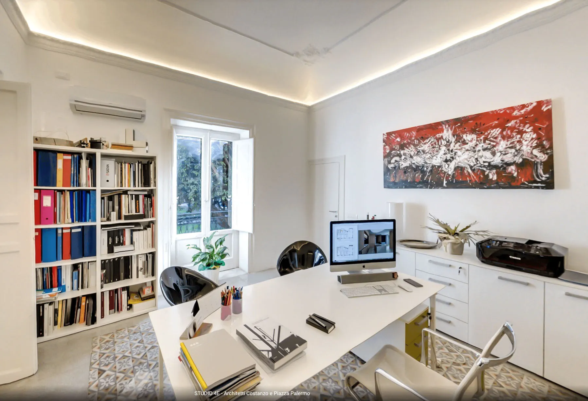

Computo Metrico a Taormina: Perché i Prezzi sono il 30% più Alti della Media

In Breve
- 👉 I costi a Taormina sono più alti per logistica e vincoli, non per “speculazione”.
- 👉 Un computo metrico realistico è la base per evitare extra‑budget.
- 👉 Se il budget non include la logistica, il progetto non è credibile.
Molti investitori restano sorpresi dai costi di ristrutturazione a Taormina: in media sono più alti del 30% rispetto ad altre zone. Ma non è un caso: logistica, vincoli e stagionalità cambiano completamente la struttura dei costi. Il dolore dell’investitore è chiaro: un budget “standard” porta a extra‑budget e ritardi. La soluzione è un computo metrico costruito su condizioni reali, con voci specifiche per accessi, permessi e vincoli.
1. Logistica e accessi: il costo invisibile
In ZTL e vicoli stretti, ogni consegna costa di più. I mezzi pesanti accedono solo in fasce ristrette (06:00‑09:30), quindi i trasporti sono frazionati. Le attività operative includono:
- voci dedicate per trasporti con mezzi leggeri;
- noleggi di micro‑gru e attrezzature speciali;
- stoccaggi temporanei fuori area con costi aggiuntivi;
- tempi uomo maggiori per movimentazioni manuali.
Queste voci da sole possono aumentare il costo complessivo del 10‑15%.
2. Vincoli e materiali: costo della conformità
Il vincolo storico e paesaggistico impone materiali specifici e tecniche conservative. Le attività operative includono:
- materiali compatibili con richieste della Soprintendenza;
- lavorazioni artigianali più lente e costose;
- campionature e prove preliminari;
- documentazione tecnica aggiuntiva.
Questi costi non sono “extra”: sono necessari per ottenere l’autorizzazione.
3. Stagionalità e tempi di cantiere
Il fermo estivo e le limitazioni di rumore allungano i tempi. Più tempo significa più costi indiretti. Le attività operative includono:
- pianificazione delle fasi rumorose in bassa stagione;
- noleggi più lunghi di ponteggi e attrezzature;
- costi di manodopera distribuiti su periodi più estesi;
- buffer temporali per autorizzazioni lente.
Il cronoprogramma incide direttamente sul costo totale dell’opera.
4. Computo metrico: come renderlo realistico
Un computo metrico corretto deve includere voci specifiche per Taormina. Le attività operative includono:
- analisi prezzi locale aggiornata;
- voci dedicate per logistica e permessi;
- capitolati con specifiche tecniche dettagliate;
- fondo extra‑budget per imprevisti strutturali.
Un computo “generico” è il modo più rapido per perdere controllo del budget.
5. Controllo costi e SAL
Il computo metrico è inutile senza controllo in cantiere. Le attività operative includono:
- SAL verificati con rilievi e documentazione fotografica;
- report mensili di scostamento costi;
- varianti gestite con approvazione preventiva;
- audit periodici con il committente.
Il controllo costante è ciò che trasforma un budget in un risultato reale.
Un altro fattore è la disponibilità di maestranze specializzate: restauratori, posatori di pietra, artigiani qualificati costano di più e lavorano con tempi più lunghi. Se non lo consideri, il cronoprogramma si allunga e il costo uomo aumenta. È un elemento strutturale del mercato locale, non un’eccezione.
Inoltre, i prezzi di molti materiali salgono per l’ultimo miglio: trasportare marmi, vetri o arredi su strada stretta impone imballaggi speciali e movimentazioni manuali. Inserire questi costi nel computo evita sorprese quando i fornitori presentano offerte “corrette” ma più alte del previsto.
Un errore frequente è non considerare i costi di protezione e ripristino delle aree comuni: scale, androni e facciate storiche richiedono teli, protezioni e pulizie extra. Sono voci piccole, ma sommate possono pesare diversi punti percentuali.
Prevedere sopralluoghi con imprese locali prima di chiudere il computo aiuta ad allineare prezzi e tempi reali: è un passaggio che riduce il rischio di offerte fuori scala.
Integra nel computo una voce per “fermo cantiere stagionale”: anche se non utilizzata, è un cuscinetto che protegge il budget in caso di stop estivi o ordinanze improvvise.